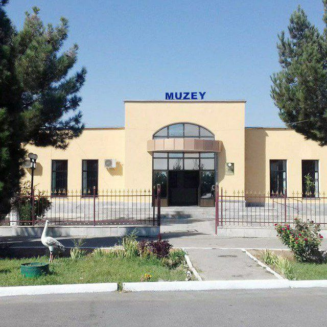
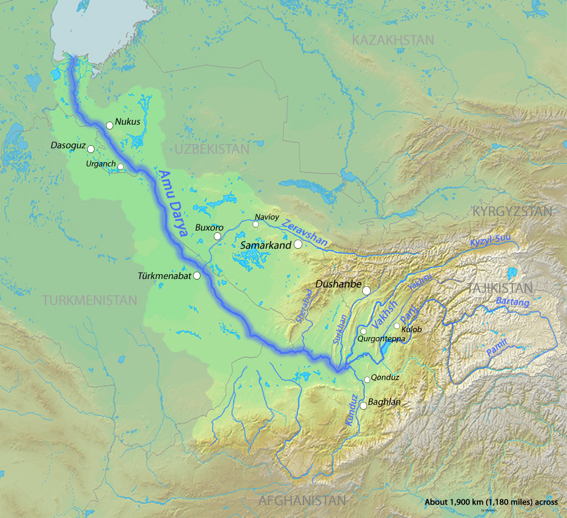

Chiroyli manzaralar


Navoiy viloyati va Navbahor tumani go‘zal tabiati, tarixiy joylari va zamonaviy rivojlangan shahar manzaralari bilan mashhur. Quyida siz Navoiyning eng chiroyli joylarini ko‘rishingiz mumkin.

Bu muzey Navoiy viloyatining tarixini va madaniyatini o‘rganish uchun ajoyib joy.

Shahar markazidagi park, dam olish va tabiat bilan yaqin bo‘lish uchun ideal maskan.

Shahar Navoiy viloyatining janubidagi Zarafshon daryosi yaqinida, Toshkent shahridan 360 km janubi-gʻarbda joylashgan. Samarqandgacha boʻlgan masofa 140 km .